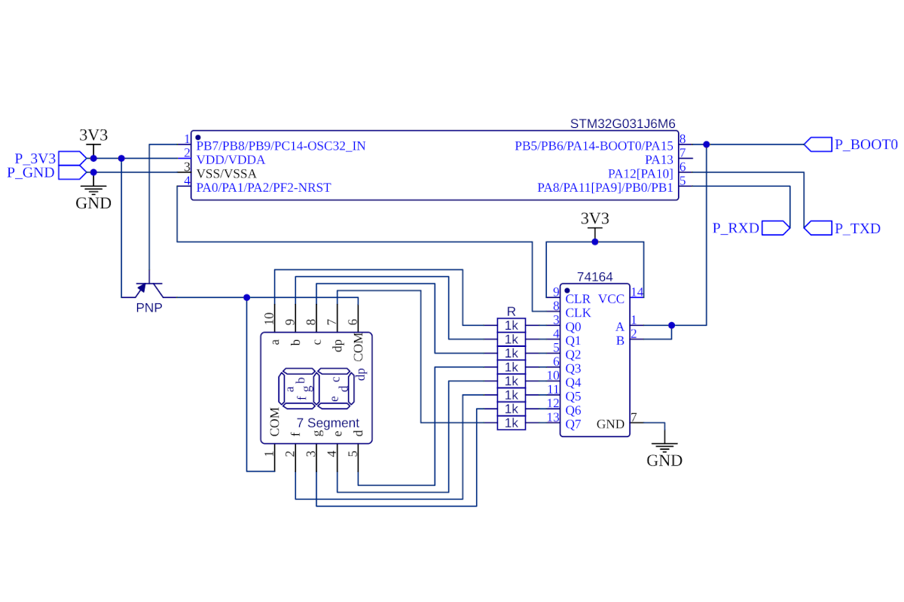

Back to tatiaart.github.io/Progress
Back to tatiaart.github.io/Progress
Back to tatiaart.github.io/Progress
Back to tatiaart.github.io/Progress
 Download this package
Download this packageLet’s take a look at the following schematic:

#TODO: UPDATE ALL CODE TO REFLECT SCHEMATIC
On each rising edge, the shift register samples the inputs AND(A, B) and puts the value into Q1. The value of the rest of Qx is put into Qx+1.
The two inputs act as a kind of chip-enable signal: when one is low, the other one’s state will be ignored and 0s are put into the outputs. This is not important right now, as we only have one device, but will become more relevant in following examples.
Here is the basic code that will operate the chip and shift out the required values to operate the 7-segment display by “bit-banging” gpio pins:
#define SYM_AMOUNT 16
uint8_t symbol[SYM_AMOUNT] = {0b00000010, 0b10011110, 0b00100100, 0b00001100, 0b10011000, 0b01001000, 0b01000000, 0b00011110,
0b00000000, 0b00001000, 0b00010000, 0b11000000, 0b01100010, 0b10000100, 0b01100000, 0b01110000};
void send_data(uint8_t data){
for(int i = 0; i<8; i++){
if( (data>>i) & 0b1 ) // Set/Reset MOSI
{
GPIOA->BSRR |= (0b1<<12);
}
else
{
GPIOA->BRR |= (0b1<<12);
}
// Pulse CLK
GPIOA->BSRR |= (0b1<<1);
delay(100); // For demonstration purposes, these delays are exaggerated
// For instant operation, replace with delayMicroseconds(1);
GPIOA->BRR |= (0b1<<1);
delay(100);
}
}
void setup() {
RCC->IOPENR |= (11 << 0); // Enable GPIO Port A & B clock
GPIOB->MODER &= ~(0b11 << 0);
GPIOB->MODER |= (0b01 << 0); // PB_0 set to output
GPIOA->MODER &= ~(0b11 << 24);
GPIOA->MODER |= (0b01 << 24); // PA_12 set to output
GPIOA->MODER &= ~(0b11 << 2);
GPIOA->MODER |= (0b01 << 2); // PA_1 set to output
}
uint8_t num = 0;
void loop() {
send_data(symbol[num%SYM_AMOUNT]); // Send symbol
num++; // Increment counter
GPIOB->BSRR |= (0b1<<0); // Enable display
delay(1000); // for 1 second
// GPIOB->BRR |= (0b1<<0); // Disable display
// ^^^^^^^^^^^^^^^^^^^^^^^
// This pin reset for disabling the display is commented out
// To showcase how the shift-register gets filled in sequentially in real time
// Uncomment it and reduce the delay in send_data()
// For instant operation
}
The numbers 0-9 consequently show up on the seven segment display, and are held on it for a second each.
With this code the MCU uses cycles to directly operate the connected pins to send the data to the shift register. When delays are encountered, necessary for the timings to be tolerated by the shift register, the MCU can not do anything else. This is perfectly fine for this basic example, but in a more complex application, other processing may need to be done, and will be slowed down by communicating with the shift register.
The STM32 feature a SPI peripheral, which can take the work of communicating with the external chip away from the MCU, allowing it to do other computations while communication occurs.
The STM32Duino core exposes this peripheral through the SPIClass
./basic_peripheral/basic_peripheral.ino
#define SYM_AMOUNT 16
uint8_t symbol[SYM_AMOUNT] = {0b00000010, 0b10011110, 0b00100100, 0b00001100, 0b10011000, 0b01001000, 0b01000000, 0b00011110,
0b00000000, 0b00001000, 0b00010000, 0b11000000, 0b01100010, 0b10000100, 0b01100000, 0b01110000};
#include <SPI.h>
SPIClass mySPI (PA12, PA11, PA1, PNUM_NOT_DEFINED); //MOSI, MISO, CLK, NSS (not used here)
// ^^^^^
// Note a limitation of STM32Duino core: appropriate MISO pin MUST be defined
// for the SPI interface, even if never used.
// It will be configured with it's alternate function set for the SPI peripheral,
// And must be reconfigured if it needs to be used elsewhere.
void setup() {
RCC->IOPENR |= (1 << 1); // Enable GPIO Port B clock
GPIOB->MODER &= ~(0b11 << 0);
GPIOB->MODER |= (0b01 << 0); // PB_0 set to output
mySPI.begin(); // Initialize STM32Duino SPI
// Pin configuration is handled automatically
mySPI.beginTransaction(SPISettings(25, LSBFIRST, SPI_MODE0)); // Set up transmission settings
}
uint8_t num = 0;
void loop() {
mySPI.transfer(symbol[num%SYM_AMOUNT]); // Send symbol
num++; // Increment counter
GPIOB->BSRR |= (0b1<<0); // Enable display
delay(1000); // for 1 second
GPIOB->BRR |= (0b1<<0); // Disable display
}
For the SPI peripheral to perform the transfer, the MCU simply loads the value desired to be transferred into the relevant register, and the rest of the communication occurs on the peripheral’s side, freeing up the MCU to do anything else the application may require it to do.
As no other operations are required in this example, the transfer actually happens in blocking mode, where the MCU waits for it to complete before continuing. In a more complex application, the MCU could wait for an interrupt from SPI, indicating transfer complete, or offload the data transfer to DMA, etc. but this is beyound the scope of this example.
To directly access the SPI peripheral without using the arduino core, it has to be configured first:
We already know how to set-up the GPIO, so let’s focus on the SPI peripheral: It is configured through the SPIx_CR1 and SPIx_CR2 registers. The selected options are highlighted with arrows:


This setup yields the following constants required to be written into SPI1_CR1 and SPI1_CR2 respectively:
SPI1->CR1 = 0b0000001110111100;
SPI1->CR2 = 0b10111 << 8;
After configuration is written, bit 6 of SPI1_CR1 can be set to enable the peripheral. SPI1 is operational.
To begin a transfer, 8 bits of data must be written to SPI1_DR. SPI1 begins the transfer immediately after the write access, and sets the BSY bit in SPI1_SR.
#define SYM_AMOUNT 16
uint8_t symbol[SYM_AMOUNT] = {0b00000010, 0b10011110, 0b00100100, 0b00001100, 0b10011000, 0b01001000, 0b01000000, 0b00011110,
0b00000000, 0b00001000, 0b00010000, 0b11000000, 0b01100010, 0b10000100, 0b01100000, 0b01110000};
void spi_setup(){
RCC->IOPENR |= (0b1 << 0); // Enable GPIO Port A clock
RCC->APBENR2 |= (0b1 << 12); // Enable SPI1 clock
GPIOA->MODER &= ~(0b11 << 24);
GPIOA->MODER |= (0b10 << 24); // PA_12 set to alternate mode
GPIOA->MODER &= ~(0b11 << 2);
GPIOA->MODER |= (0b10 << 2); // PA_1 set to alternate mode
SPI1->CR1 = 0b0000001110111100;
SPI1->CR2 = 0b10111 << 8; // Configure SPI as outlined
SPI1->CR1 |= 0b1 << 6; // Enable SPI
}
void spi_send(uint8_t data){
*(volatile uint8_t*)&SPI1->DR = (data); // Make sure to write only 8 bits
}
void setup() {
RCC->IOPENR |= (1 << 1); // Enable GPIO Port B clock
GPIOB->MODER &= ~(0b11 << 0);
GPIOB->MODER |= (0b01 << 0); // PB_0 set to output
spi_setup();
}
uint8_t num = 0;
void loop() {
spi_send(symbol[num%SYM_AMOUNT]); // Send symbol
num++; // Increment counter
GPIOB->BSRR |= (0b1<<0); // Enable display
delay(1000); // for 1 second
GPIOB->BRR |= (0b1<<0); // Disable display
}
As such, the burden of handling communication with the external chip is offloaded to the integrated periphery of the MCU.